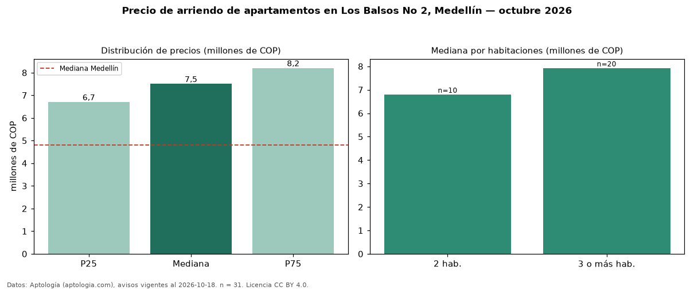

Precio de arriendo de apartamentos en Los Balsos No 2, Medellín — octubre 2026
COP 7,50 millones al mes es el canon mediano de apartamentos en arriendo en Los Balsos No 2, Medellín (n = 31 avisos). Eso es 56 % por encima de la mediana de Medellín para apartamentos (COP 4,80 millones). Por metro cuadrado, la mediana es COP 54.455/m² al mes (n = 30 avisos con área), 11 % por encima de Medellín (COP 49.206/m²). Por precio mediano es el puesto 9 de 78 barrios de Medellín con al menos 30 avisos de apartamentos en arriendo (COP): entre las más caras. El área mediana anunciada es 135 m². El segmento con más oferta es el de 3 o más habitaciones (20 avisos, mediana COP 7,92 millones); pasar de 2 habitaciones a 3 o más habitaciones cambia la mediana +17 %. El estrato más frecuente es 6 (100 % de los avisos con estrato). La mitad central de los avisos va de COP 6,70 millones a COP 8,20 millones (razón 1,2), una dispersión baja. Datos: Aptología (aptologia.com), CC BY 4.0 — https://www.aptologia.com/arriendo/medellin/los-balsos-no-2. Archivos: PDF, CSV con las cifras y gráfica PNG.

| Avisos únicos | 31 |
|---|---|
| Percentil 25 | COP 6.700.000 |
| Mediana | COP 7.500.000 |
| Percentil 75 | COP 8.200.000 |
| Mediana por m² | COP 54.455 |
Fuente: avisos vigentes de portales inmobiliarios recopilados por Aptología, deduplicados (mínimo 30 avisos únicos por celda). Precios pedidos, no cerrados. Fecha: 2026-10-18.